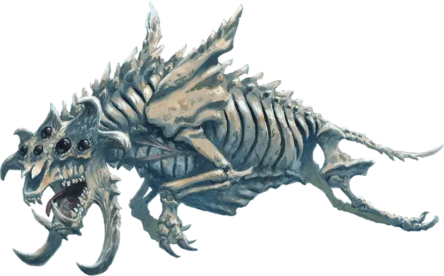

Влазок
Vlazok
Большое Исчадие (Демон), обычно хаотично-злое

Класс Доспеха 17 (природный доспех)
Хиты 136 (16к10 + 48)
Скорость 30 футов, лазая 30 футов
| мод | спас | ||
|---|---|---|---|
| СИЛ | 21 | +5 | +9 |
| ЛОВ | 18 | +4 | +4 |
| ТЕЛ | 16 | +3 | +7 |
| мод | спас | ||
|---|---|---|---|
| ИНТ | 6 | −2 | −2 |
| МДР | 9 | −1 | −1 |
| ХАР | 9 | −1 | −1 |
Навыки Восприятие +3
Сопротивление урону огонь, холод, электричество
Иммунитет к урону яд
Иммунитет к состояниям испуг, истощение, отравление, очарование
Чувства тёмное зрение 120 футов, пассивное Восприятие 13
Языки Бездны, Телепатия 120 фт.
Опасность 11 (7200 опыта)
Бонус мастерства +4
Особенности
Всевидящий. Влазок не может быть застигнут врасплох.
Кровавое бешенство. Влазок совершает с преимуществом броски рукопашных атак по существам, у которых хиты ниже максимума.
Сопротивление магии. Влазок совершает с преимуществом спасброски от заклинаний и прочих магических эффектов.
Паучье лазанье. Влазок может лазать по сложным поверхностям, включая потолки, без совершения проверок характеристик.
Действия
Мультиатака. Влазок совершает две атаки Боданием.
Бодание. Рукопашная атака оружием: +9 к попаданию, досягаемость 5 футов, одна цель. Попадание: 23 (4к8 + 5) колющего урона. Если цель — существо Большого размера или меньше, то она сбивается с ног.
Бонусные действия
Растаптывание. Рукопашная атака оружием: +9 к попаданию, досягаемость 5 футов, одно лежащее ничком существо. Попадание: 27 (4к10 + 5) дробящего урона.
Описание
Скелетоподобные четвероногие чудища, называемые влазоками, особенно хорошо подходят для зачисток после битв во Внешних планах. Они любят перемалывать поля сражений после окончания самых ожесточенных боев, затаптывая выживших и сокрушая очаги сопротивления. Когда влазоки предвидят наплыв врагов, то демоны прыгают на них сверху, чтобы раздавить.
Влазоки обладают острым восприятием мира благодаря глазам, расположенным вокруг их отвратительных голов. Они легко теряют интерес к своим задачам, если только могущественные командиры, подобные лордам демонов, не держат их в узде. Без тщательного руководства влазоки становятся безумными проводниками хаоса, прорываясь сквозь толпы более слабых демонов и уничтожая их ряды мощными ударами.